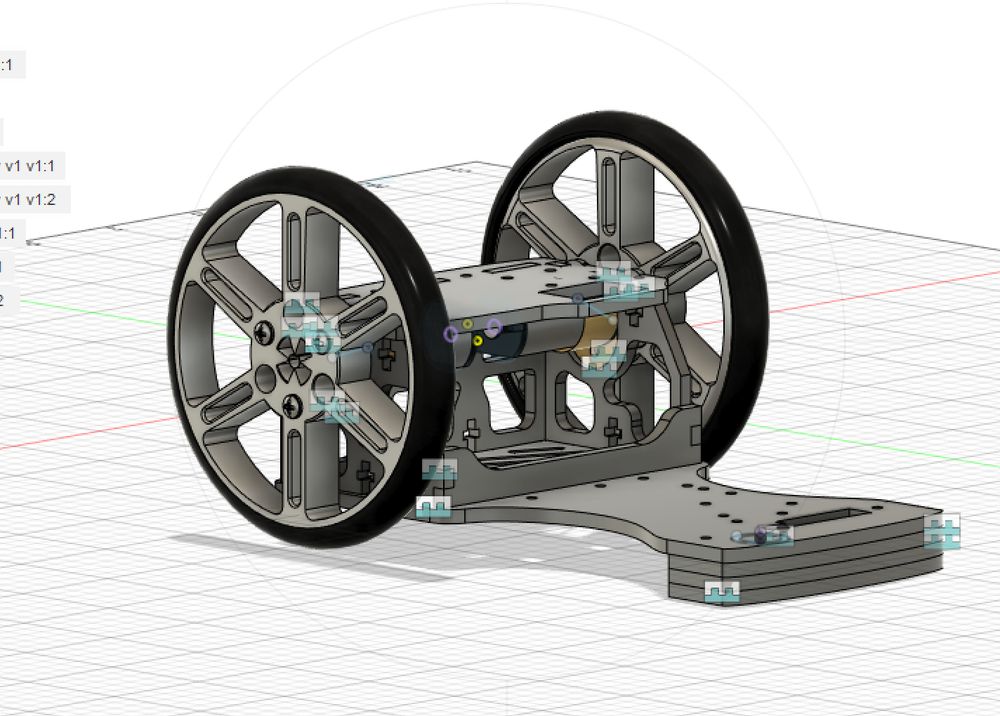
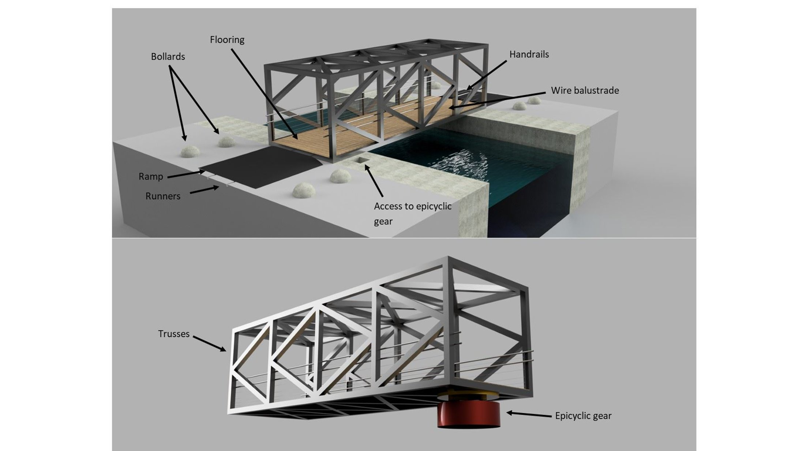
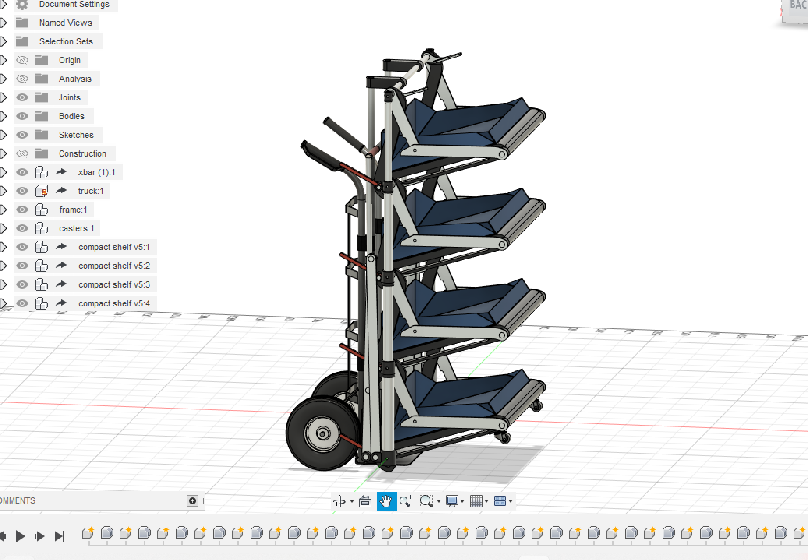
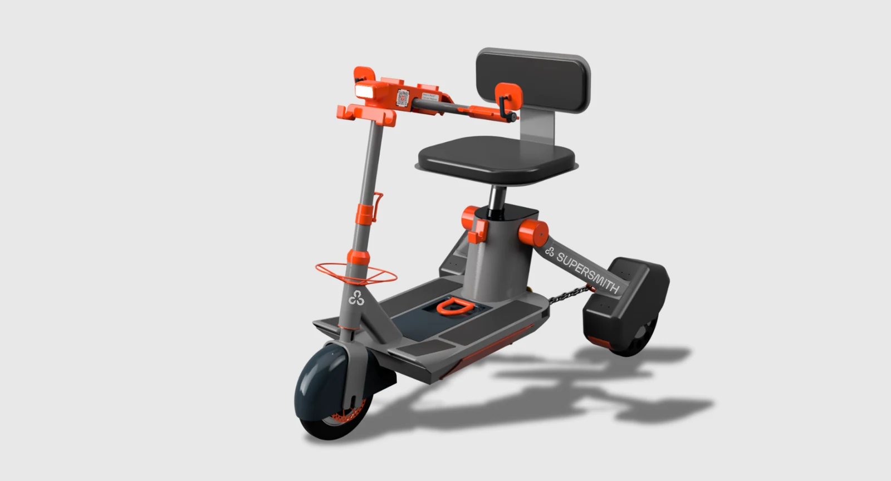
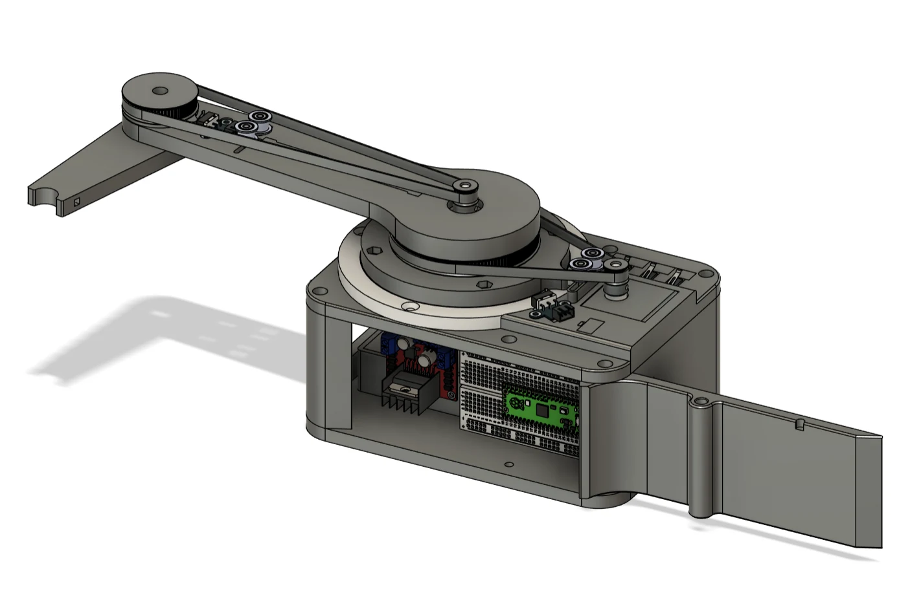
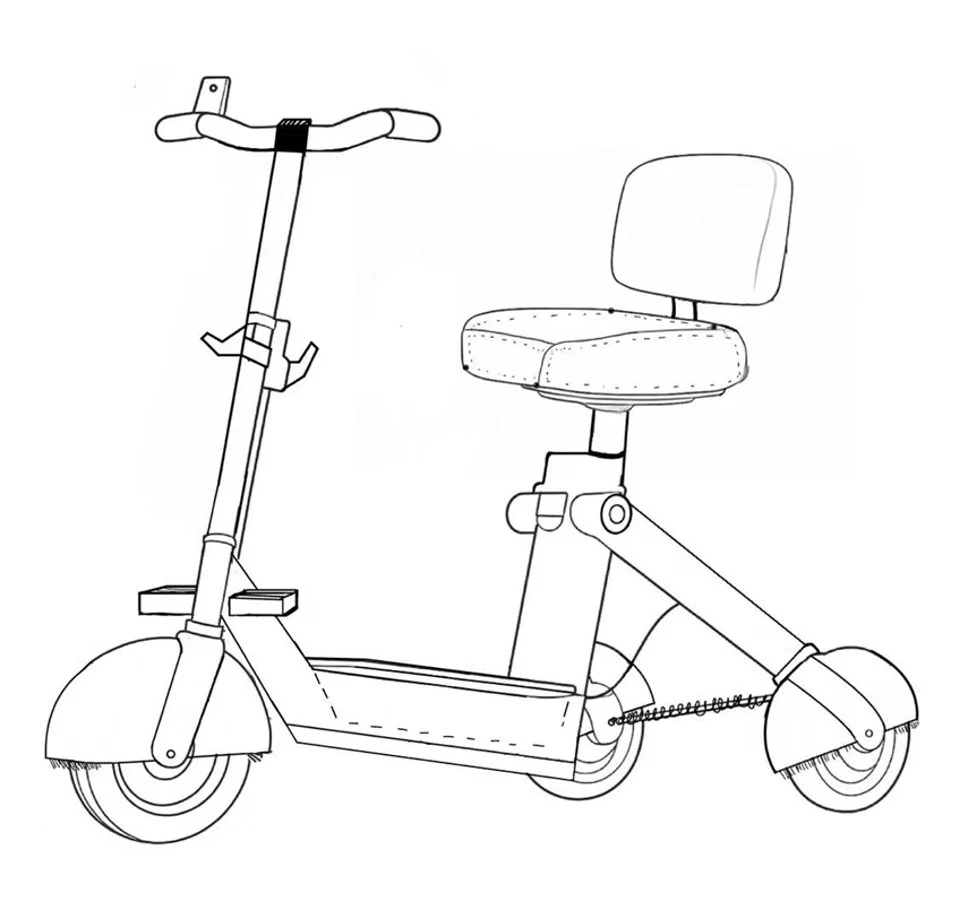
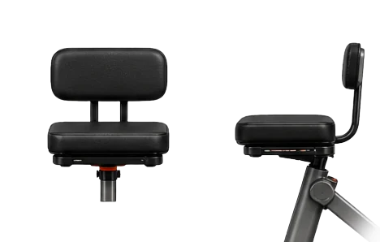
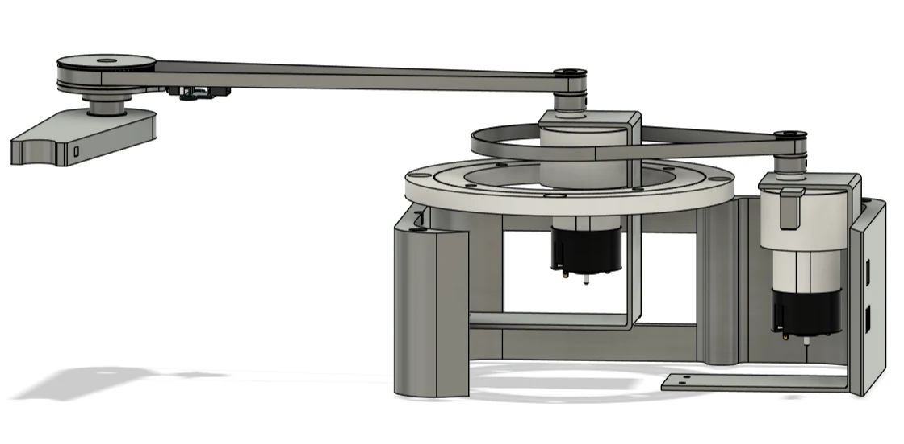
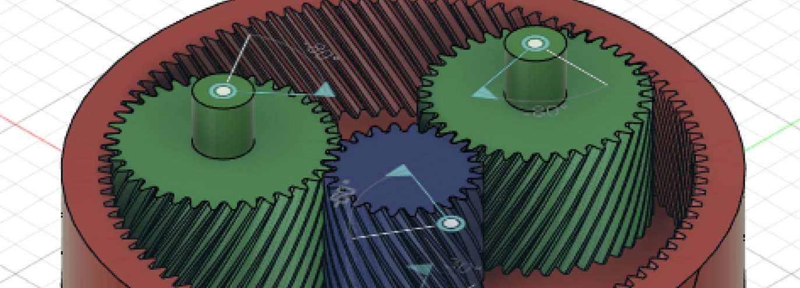

Wheeled mechanism assembly
The Chariot
A CAD assembly exploring wheels, structural components and their mechanical connections.
Engineering Design Portfolio
I'm Xiyan, an Engineering Design graduate from the University of Bristol. I connect user needs with engineering analysis to develop thoughtful, practical products.
Explore selected work01 / CAD & mechanism studies
Selected CAD work exploring mechanisms, structures and everyday products.

Wheeled mechanism assembly
A CAD assembly exploring wheels, structural components and their mechanical connections.

Structure and mechanism
A bridge concept bringing together structural geometry, access features and a geared mechanism.

Product assembly
A mechanical aid concept explored through a detailed multi-component CAD assembly.
02 / Engineering case studies
Further work in inclusive mobility, robot control and hands-on learning.

3Scooter / Supersmith
Investigating scooter seating through finite element analysis and pressure testing, then translating the findings into a seating concept for a shared fleet.

Two-DOF drawing robot / 2026
A planar drawing robot combining belt-driven joints, motor identification and position/velocity control.
Make it.
Understand it.
Mini fridge learning kit / 2026
An educational mini fridge concept exploring a six-part enclosure, assembly joints and accessible cooling and control components.
03 / About
I graduated with an MEng in Engineering Design from the University of Bristol, achieving an Upper Second-Class degree.
My interests sit where user experience and engineering meet: how a product feels, how it works, and how it fits into everyday use. My projects have brought together CAD, simulation, physical testing and system-level thinking.
My wider project experience includes the Engineering Without Borders challenge, Python data analysis and a project proposal competition.
User needs, concept development, CAD and design for assembly.
Finite element analysis, pressure measurement and control systems.
Fusion 360, Abaqus, Python, MATLAB / Simulink and Excel.
Technical documentation, cross-team communication and bilingual English/Chinese communication.
04 / Experience
Experience in engineering, technical communication and customer-facing work.
Jan to Sep 2024
Placement · Hinkley Point C
Supported Safety & Handlings and Valves teams with exemption reviews, Python and Excel analysis, technical documentation and cross-department collaboration.
Jun to Aug 2022
Trainee · Oxford
Contributed to an educational website using reStructuredText and supported Excel-based analysis.
Customer-facing experience
Tour Guide · Oxford
Led walking tours, communicated with diverse audiences and adapted itineraries when unexpected changes affected the visitor experience.
Next chapter
I'm interested in opportunities in engineering design and product development, especially where technical problem-solving and user needs come together.
01 / Inclusive mobility
A seating investigation connecting engineering evidence with the needs of mobility scooter users.
A mobility scooter seat needs to support comfort while remaining practical to clean, maintain and use across a varied user population. The later group project explored a shared fleet for shopping centres and airports, adding service and operational requirements to the product design.
My individual research focused on static seat comfort, finite element analysis and pressure measurement. I then carried this seating evidence into the group project's wider product/service concept. The shared fleet concept was a team outcome.

| Evidence | Reported peak | Design implication |
|---|---|---|
| Initial FEA | 160.6 kPa | Investigate localised loading around the ischial tuberosities. |
| X-sensor measurement | 110.3 kPa | Use physical measurement alongside the simplified model. |
The simulation and measurement figures come from different representations and test conditions. They are supporting evidence, rather than a direct like-for-like comparison or proof of clinical performance.

The proposed seat used a 480 × 370 mm cushion, 75 mm cushion thickness and a 420 mm wide backrest. The material stack combined a waterproof PVC/vinyl cover, a latex foam top layer, a high resilience polyurethane supporting layer and an ABS base plate.
These were design specifications intended to balance comfort, cleaning and maintenance. User comfort and durability still require physical evaluation.
The investigation informed a seating concept combining cushioning, back support and replaceable components. It helped me connect local pressure findings with wider decisions about comfort, usability and maintainability.
The next step would be physical evaluation of the revised cushion and backrest with users. I would also review foam modelling assumptions before using simulation to make stronger performance claims.
02 / Robotics & control
Exploring how a mechanical system and its controller work together to produce controlled planar motion.
A drawing robot must translate a planned path into coordinated joint motion. The project brought together mechanism design, motor behaviour and trajectory tracking.

The project connected mechanical choices with control performance. A useful controller depends on understanding the physical system, including joint coupling and changing operating conditions.
It also reinforced the importance of separating motor-level behaviour from end-effector motion when diagnosing tracking problems.
A repeatable benchmark using straight lines, corners and curves would support comparison of tracking error across controller settings. Measured accuracy and repeatability figures should accompany the final drawing samples.
03 / Educational product
An assembly-focused product concept that makes cooling, sensing and control visible through a hands-on build.
Create an enclosure that learners can assemble while understanding the relationship between a thermoelectric cooler, a temperature sensor and a controller. The power and control components were positioned at the rear, outside the cooling compartment.
The enclosure links assembly with an understandable system layout. Keeping the electronics outside the cooling compartment supports access for inspection and makes the controller's role easier to explain.
Assembly details, clear wiring information and safe handling need to be considered together when developing a kit for learners.
This case study presents concept and CAD development. Further work would include print-fit checks, assembly trials, thermal performance measurement and an electrical safety review before use as a teaching kit.
CAD & mechanism studies / Fusion 360
A wheeled mechanism study developed as a Fusion 360 assembly.
The CAD model shows how the wheels, frame and transmission components fit together. The assembly view makes the relationship between the components visible and provides a basis for explaining the mechanism.
This project reflects my experience modelling mechanical components and bringing them together in an assembly.
CAD & mechanism studies / Fusion 360
A bridge concept combining structural design with a geared mechanism.

The overall model presents the flooring, handrails, wire balustrade and ramps alongside a truss structure. A second view shows an epicyclic gear beneath the bridge, connecting the structural assembly with the mechanism.
The project brings together structural geometry and mechanical design within one CAD assembly.
CAD & mechanism studies / Fusion 360
A CAD concept for a wheeled aid with stacked platforms.
The Fusion 360 assembly shows four platforms supported by a vertical frame and a wheeled base. The model explores the arrangement and interfaces of the components within a single product.
The project reflects my interest in everyday usability and my experience developing detailed multi-component CAD models.